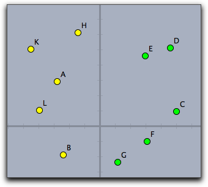

幾何学要素へのアクセス
CindyScript とシンデレラの幾何学部分の間のコミュニケーションは、作成物の幾何学的な対象にアクセスすることによってなされます。幾何学要素へのアクセスには2つの異なる方法があります。ひとつは、要素のラベル名で、もう一つは CindyScript の特殊演算子によってです。基本的に、シンデレラの幾何学要素のパラメータはすべて CindyScript で読むことができますし、大部分のパラメータは CindyScript で設定することができます。以下では、まず、幾何学要素へのアクセスのしかたを述べ、その後パラメータの詳細なリストを示します。
要素にその名前でアクセスする
すべての幾何学要素には個々の名前(ラベル)があります。この名前はCindyScriptへの「ハンドル」として取り扱うことができます。CindyScript において、要素はあらかじめ定義され他変数の役割を演じます。それぞれのパラメータは
. (ドット)演算子によって読み書きできます。例えば、次のコードでは、点
Aの大きさを20に設定します。
もし、点や線がドット演算子ではなく算術演算子に含まれるときは、自動的にその位置を表すベクトルに変換されます。 したがって、点は2次元座標で表される
[x,y] ベクトルに変換されます。直線は、同様に同次座標で表される
[x,y,z] ベクトルに変換されます。しかし、座標を設定する場合は、ドット演算子を用いて明示的に設定されなければなりません。幾何学要素へのハンドルが算術演算子で使われないのであれば、依然として幾何学的要素として扱われます。この概念が微妙なので、少し例を挙げてはっきりさせましょう。
A と B , C がシンデレラの点であると仮定します。
は、
A を線分
BCの中点に設定します。この2点は算術演算子に含まれますので、すぐに
[x,y] ベクトルとし処理されます。しかし、点
A の位置は
.xy パラメータによって明示的に設定されなければなりません。
次のプログラムでは３つの点の色をすべて緑色にします。
pts=[A,B,C];
forall(pts,p,
p.color=[0,1,0];
)
このコードでは、点の名前はリスト
ptsへのハンドルとしてそのまま扱われます。
forall 演算子で走査されたハンドルは一度
p変数に代入され、そこから色のパラメータにアクセスされます。
要素のリスト
ときには、それぞれの名前によって個々にアクセスする必要がないこともあります。特に、図面の全体に対して操作をしたい場合です。たとえば、点集合の凸包を計算する時などです。そのために、CindyScript は要素のリストを返すいくつかの演算子を用意しています。たとえば、
allpoints() 演算子はすべての点の リストを返します。例でこれを示しましょう。次のスクリプトは、位置を
y軸 と比較して、点の色を変えます。
pts=allpoints();
forall(pts,p,
if(p.x<0,
p.color=[1,1,0],
p.color=[0,1,0];
)
)
次の図は、ばらばらに置いた点にこのスクリプトを適用した結果を示します。

点のリストを処理する
幾何学要素のパラメータ
CindyScript でアクセスできるすべてのパラメータについて解説します。このリストは将来のシンデレラのリリース時に拡張されるかもしれません。各パラメータにおいて、読み出しのみか、読み書き可能かに関わらず、型と使用目的についての簡単な説明をします。パラメータの型は次の通りです。
- real: 実数
- int: 整数
- bool:
true または false
- string: 文字列
- 2-vector: 2次元ベクトル
- 3-vector: 3次元ベクトル
- 3x3-matrix: 3行3列行列
パラメータの書き込みは、時には自由要素に限られることがあります。該当する項で "free" の語を使ってそれを表します
すべての幾何学要素についてのパラメータ
| 名前 | 読み出し | 書き込み | 型 | 目的
|
|
|
color | 可 | 可 | 3-vector | オブジェクトの色 (赤, 緑, 青)
|
colorhsb | 可 | 可 | 3-vector | オブジェクトの色 (色相, 彩度, 輝度)
|
isshowing | 可 | 可 | bool | オブジェクトの表示/非表示 (オブジェクトに依存するすべての要素に引き継がれる)
|
visible | 可 | 可 | bool | オブジェクトの表示/非表示 (従属するオブジェクトからは引き継がれない)
|
alpha | 可 | 可 | real | オブジェクトの透明度 ( 0.0 から 1.0)
|
labelled | 可 | 可 | bool | ラベルの表示/非表示
|
name | 可 | 不可 | string | オブジェクトの名称
|
caption | 可 | 可 | string | オブジェクトのラベル
|
trace | 可 | 可 | bool | 軌跡(足跡)の表示/非表示
|
tracelength | 可 | 可 | int | 足跡の長さ
|
selected | 可 | 可 | bool | オブジェクトが選択されているかどうか
|
それぞれの幾何学要素は個別の
識別名を持ちます。識別名は
.nameパラメータによってアクセスできます。たとえば、
A.name は文字列
"A" を返します。その名前は、画面上に表示される
ラベル(caption) とは異なる場合があります。ラベルが設定されていなければ
A.caption は空の文字列です。また、ラベルはインスペクタで変更することができます。
点のパラメータ
| 名前 | 読み出し | 書き込み | 型 | 目的
|
|
|
x | 可 | free | real | 点のx座標
|
y | 可 | free | real | 点のy座標
|
xy | 可 | free | 2-vector | 点のxy座標
|
coord | 可 | free | 2-vector | 点のxy座標
|
homog | 可 | free | 3-vector | 点の同次座標
|
angle | 可 | free | real | 円周上の点の角度(円周上の点にのみ適用)
|
size | 可 | 可 | int | 点の大きさ (0 から 40)
|
imagerot | 可 | 可 | real | 点が画像で置き換えられている場合、回転角度
|
直線のパラメータ
| 名前 | 読み出し | 書き込み | 型 | 目的
|
|
|
homog | 可 | free | 3-vector | 直線の同次座標
|
angle | 可 | free | real | 直線の角度
|
slope | 可 | free | real | 直線の傾き
|
size | 可 | 可 | int | 直線の幅 (0 から 10)
|
円と円錐曲線(２次曲線)
| 名前 | 読み出し | 書き込み | 型 | 目的
|
|
|
center | 可 | free | real | 円の中心
|
radius | 可 | free | real | 円の半径
|
matrix | 可 | 不可 | real | 円または二次曲線を記述する行列
|
size | 可 | 可 | int | 線の幅 (0 から 10)
|
テキストのパラメータ
| 名前 | 読み出し | 書き込み | 型 | 目的
|
|
|
text | 可 | 可 | string | 文字列の内容
|
pressed | 可 | 可 | boolean | 文字列の状態。ボタンならばtrue
|
xy | 可 | 可 | 2-vector | 文字列の位置
|
アニメーションのパラメータ
| 名前 | 読み出し | 書き込み | 型 | 目的
|
|
|
run | 可 | 可 | bool | アニメーションの実行/非実行
|
speed | 可 | 可 | real | アニメーションの相対的な速さ
|
変換のパラメータ
| 名前 | 読み出し | 書き込み | 型 | 目的
|
|
|
matrix | 可 | 不可 | 3x3 matrix | 変換の同次行列
|
inverse | 可 | 不可 | 3x3 matrix | 逆変換の同次行列transformation
|
)) CindyLab((オブジェクトのパラメータ
CindyScript でアクセスできる幾何学要素以外のものとして、
CindyLab のシミュレーション・パラメータがあり、 CindyScript によって読み書きができます。
| 名前 | 読み出し | 書き込み | 型 | 目的
|
|
|
simulate | 可 | 可 | bool | オブジェクトがシミュレーションに加わるかどうか
|
質点のパラメータ
| 名前 | 読み出し | 書き込み | 型 | 目的
|
|
|
mass | 可 | 可 | real | オブジェクトの質量
|
charge | 可 | 可 | int | オブジェクトの電荷
|
friction | 可 | 可 | real | オブジェクトの摩擦
|
radius | 可 | 可 | real | 質点を球とみなすときの半径
|
posx | 可 | 可 | real | 質点のx座標
|
posy | 可 | 可 | real | 質点のy座標
|
pos | 可 | 可 | 2-vector | 質点の位置ベクトル
|
vx | 可 | 可 | real | 速度のx成分
|
vy | 可 | 可 | real | 速度のy成分
|
v | 可 | 可 | 2-vector | 速度ベクトル
|
fx | 可 | 不可 | real | 粒子にかかる力のx成分
|
fy | 可 | 不可 | real | 粒子にかかる力のy成分
|
f | 可 | 不可 | 2-vector | 粒子にかかる力のベクトル
|
kinetic | 可 | 不可 | real | 粒子の運動エネルギー
|
ke | 可 | 不可 | real | 粒子の運動エネルギー
|
質点間に力を定義したい場合があります。そのときは
Integeration Tick スロットにコードを書きます。質点の位置が内部的に通常の幾何学要素と異なるタイムスケールで動くときは
pos,
posx および
posy によってその位置にアクセスする必要があります。
バネとクーロン力のパラメータ
| 名前 | 読み出し | 書き込み | 型 | 目的
|
|
|
l | 可 | 不可 | real | バネの現在長
|
lrest | 可 | 不可 | real | バネの自然長
|
ldiff | 可 | 不可 | real | 現在の長さと自然長との差
|
strength | 可 | 可 | real | バネ定数
|
f | 可 | 不可 | real | バネにかかる力
|
amplitude | 可 | 可 | real | 振幅
|
speed | 可 | 可 | real | 運動の速さ
|
phase | 可 | 可 | real | 運動の段階（位相） ( 0.0 と 1.0 の間の数)
|
potential | 可 | 不可 | real | バネのポテンシャルエネルギー
|
pe | 可 | 不可 | real | バネのポテンシャルエネルギー
|
速度のパラメータ
| 名前 | 読み出し | 書き込み | 型 | 目的
|
|
|
factor | 可 | 可 | real | 図で表されている速度と実際の速度との掛け率
|
重力のパラメータ
| 名前 | 読み出し | 書き込み | 型 | 目的
|
|
|
strength | 可 | 可 | real | 重力場の強さ
|
potential | 可 | 不可 | real | 重力場におけるすべての質点のポテンシャルエネルギー
|
pe | 可 | 不可 | real | 重力場におけるすべての質点のポテンシャルエネルギー
|
恒星のパラメータ
| 名前 | 読み出し | 書き込み | 型 | 目的
|
|
|
mass | 可 | 可 | real | 恒星の質量
|
potential | 可 | 不可 | real | 恒星の場におけるすべての質点のポテンシャルエネルギー
|
pe | 可 | 不可 | real | 恒星の場におけるすべての質点のポテンシャルエネルギー
|
電磁場のパラメータ
| 名前 | 読み出し | 書き込み | 型 | 目的
|
|
|
strength | 可 | 可 | real | 電磁場の強さ
|
friction | 可 | 可 | real | 磁力のかかるフィールドでの摩擦
|
床と反射壁のパラメータ
| 名前 | 読み出し | 書き込み | 型 | 目的
|
|
|
xdamp | 可 | 可 | real | x方向の吸収率
|
ydamp | 可 | 可 | real | y方向の吸収率
|
環境のパラメータ
環境は内蔵演算子の
simulation() によってアクセスできます。次の項目がアクセスできます。
| 名前 | 読み出し | 書き込み | 型 | 目的
|
|
|
gravity | 可 | 可 | real | 全体にかかる重力
|
friction | 可 | 可 | real | 全体にかかる摩擦力
|
kinetic | 可 | 不可 | real | 全体的な運動エネルギー
|
ke | 可 | 不可 | real | 全体的な運動エネルギー
|
potential | 可 | 不可 | real | 全体的なポテンシャルエネルギー
|
pe | 可 | 不可 | real | 全体的なポテンシャルエネルギー
|
インスペクタ
CindyScript の
inspect() 関数を使えば、
インスペクタ で利用できるすべての属性にアクセスできます。たとえば、すでに描かれている点Ａがあるとき、
とすれば、
[name,definition,color,visibility,drawtrace,tracelength,
traceskip,tracedim,render,isvisible,text.fontfamily,
pinning,incidences,labeled,textsize,textbold,textitalics,
ptsize,pointborder,printname,point.image,
point.image.rotation,freept.pos]
という文字列が返されます。
2つのパラメータを使う形式の
inspect(,) を使えば、上のリストにあるもののどれかを読み出せます。たとえば、
inspect(A,"text.fontfamily")
とすれば
が返ってきます。
3つのパラメータを使う形式の
inspect(,,) を使えば、読み出しのみの属性(たとえば、要素の定義など)を除いて、その値を設定することができます。次の例は、Aのフォント Serif に設定します。
inspect(A,"text.fontfamily","Serif")
inspect 命令は非常に強力で、インスペクタでマウスを使ってやらなければならないようなことを自動化することができます。また、すぺてのパラメータのきめ細かいコントロールが可能になります。
ユーザー属性の設定: attribute(<geo>,<string1>,<string2>)
説明： <geo> の属性を <string1> と <string2>で設定します。
ユーザー属性の取得: attribute(<geo>,<string>)
説明： <string> で定義される幾何要素 <geo> のユーザー属性を取得します。
この２つのユーザー属性に関する関数は
Visage で主に使用します。
要素の作成と消去
シンデレラ2.1からは、
CindyScript で点を追加することができます。関数
p = createpoint("A",[4,6])
は、点Aが既存でなければ、座標(4,6)に点Aを作ります。すでに点Aがあれば、座標(4,6)に点を移動します。関数の値は、作られた点か、すでにあった点になります。 つまり、
createpoint- 命令で点を作ったとき、この関数を繰り返して使ったとしても悪影響はなく、その点を確実に作れます。。
removeelements 関数を使えば、図形から要素を取り除くことができます。ただし、従属する点もすべて消去されますので注意してください。 この関数の引数は、つぎのいずれかの方法で与えます。要素「A」を取り除くためには
または
removeelement(element("A"))
とします。
任意の要素を作成する他の関数については、
幾何との連携の節にもあります。